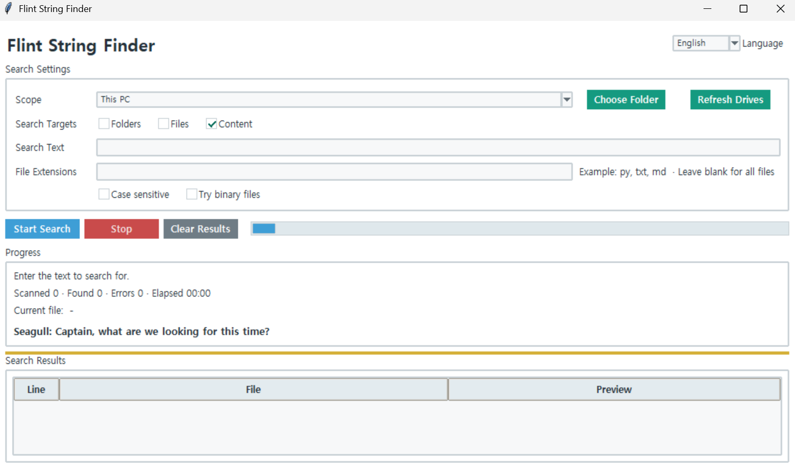
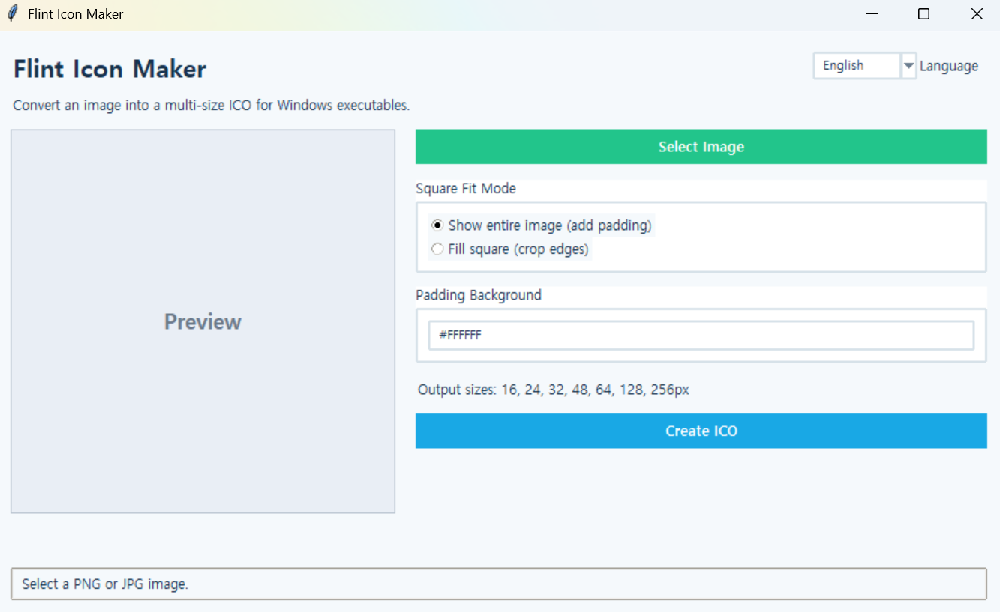

Flint String Finder
A Windows GUI search tool for finding files that contain a specific string across multiple drives or folders.
Flinthawk's toolbox is stocked with useful gear for the voyage.
It also contains a nuclear cannon, an anti-gravity cruise system, and a giant squid repeller, but those are not available to the public.

A Windows GUI search tool for finding files that contain a specific string across multiple drives or folders.

A GUI tool for converting PNG, JPG, WEBP, and BMP images into multi-size ICO files for Windows executables.